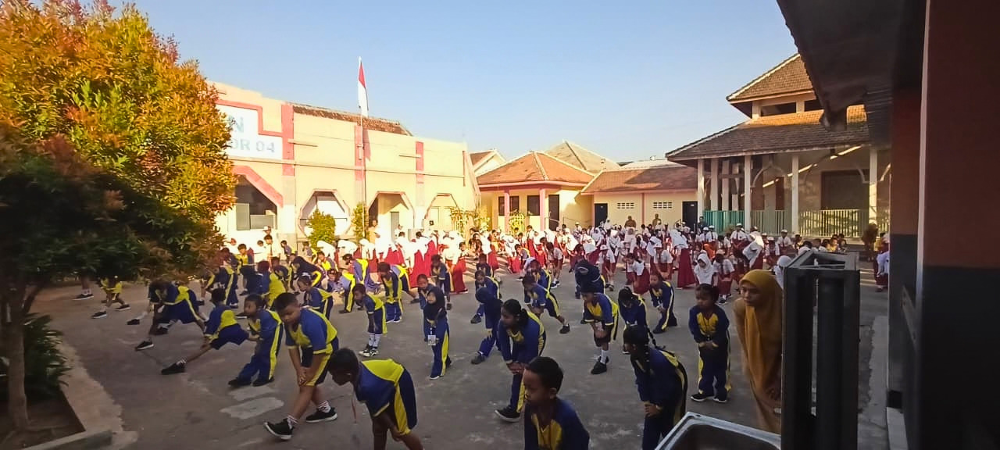

Pentingnya Menjaga Kesehatan di Tengah Dinamika Cuaca Kabupaten Jember Saat Ini
Melihat kondisi cuaca dan iklim di wilayah Kabupaten Jember yang sering berubah-ubah akhir-akhir ini, pihak sekolah mengimbau seluruh siswa, guru, dan orang tua agar senantiasa menjaga kesehatan tubuh. Konsumsi makanan bergizi, perbanyak minum air putih, dan istirahat yang cukup sangat diperlukan agar proses belajar mengajar tetap optimal dan terhindar dari penyakit.
Oleh Tim UKS Sekolah
Sehat Itu Penting ✨